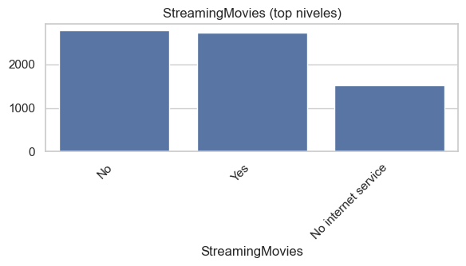
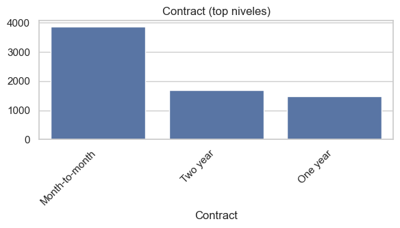
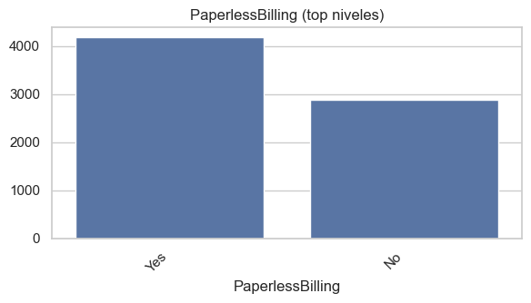
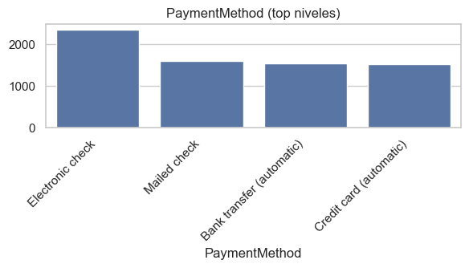
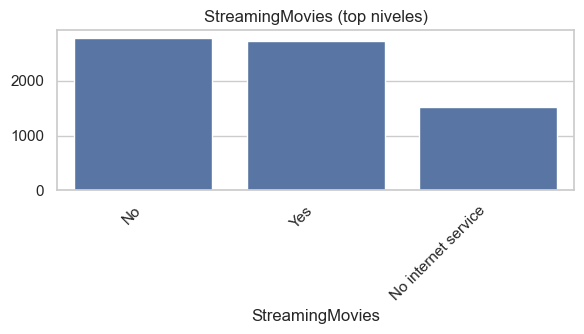
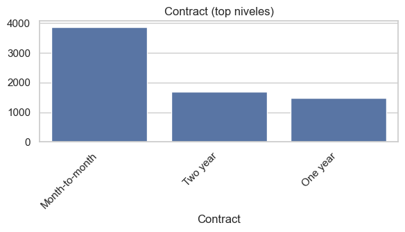
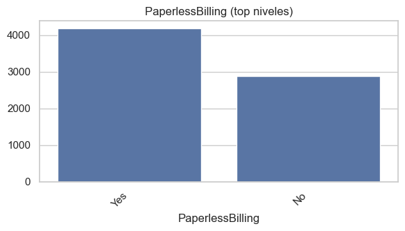
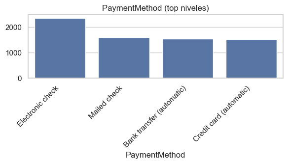

2. Análisis Exploratorio de Datos (EDA)#
Librerías#
# === Importaciones base del EDA ===
from pathlib import Path
import numpy as np
import pandas as pd
import matplotlib.pyplot as plt
import seaborn as sns
from scipy import stats
from scipy.stats import chi2_contingency, mannwhitneyu
pd.set_option("display.max_columns", 100)
sns.set(style="whitegrid")
FIGS = Path("..")/"docs"/"assets"/"figuras"
FIGS.mkdir(parents=True, exist_ok=True)
1. Carga de la Base de Datos#
from pathlib import Path
import pandas as pd
import kagglehub
# Rutas del proyecto
DATA_DIR = Path("..")/"data"
RAW = DATA_DIR/"raw"
PROC = DATA_DIR/"processed"
RAW.mkdir(parents=True, exist_ok=True)
PROC.mkdir(parents=True, exist_ok=True)
# 1) Descargar dataset (devuelve la carpeta local del dataset)
local_dir = kagglehub.dataset_download("blastchar/telco-customer-churn")
print("Descargado en:", local_dir)
# 2) Nombre del CSV dentro del dataset
csv_path = Path(local_dir) / "WA_Fn-UseC_-Telco-Customer-Churn.csv"
# 3) Leer CSV
df = pd.read_csv(csv_path)
# 4) Limpieza mínima de columnas y tipos
df.columns = (
df.columns
.str.strip()
.str.replace(" ", "_")
.str.replace("(", "", regex=False)
.str.replace(")", "", regex=False)
)
# TotalCharges a numérico (viene con espacios en algunas filas)
if "TotalCharges" in df.columns:
df["TotalCharges"] = pd.to_numeric(df["TotalCharges"], errors="coerce")
print("Shape:", df.shape)
display(df.head())
# 5) Guardar copias
df.to_csv(RAW/"telco_churn.csv", index=False)
df.to_parquet(PROC/"telco_churn.parquet", index=False)
print("Guardado en:")
print(" -", (RAW/"telco_churn.csv").resolve())
print(" -", (PROC/"telco_churn.parquet").resolve())
Downloading from https://www.kaggle.com/api/v1/datasets/download/blastchar/telco-customer-churn?dataset_version_number=1...
100%|██████████| 172k/172k [00:00<00:00, 1.12MB/s]
Extracting files...
Descargado en: C:\Users\juana\.cache\kagglehub\datasets\blastchar\telco-customer-churn\versions\1
Shape: (7043, 21)
| customerID | gender | SeniorCitizen | Partner | Dependents | tenure | PhoneService | MultipleLines | InternetService | OnlineSecurity | ... | DeviceProtection | TechSupport | StreamingTV | StreamingMovies | Contract | PaperlessBilling | PaymentMethod | MonthlyCharges | TotalCharges | Churn | |
|---|---|---|---|---|---|---|---|---|---|---|---|---|---|---|---|---|---|---|---|---|---|
| 0 | 7590-VHVEG | Female | 0 | Yes | No | 1 | No | No phone service | DSL | No | ... | No | No | No | No | Month-to-month | Yes | Electronic check | 29.85 | 29.85 | No |
| 1 | 5575-GNVDE | Male | 0 | No | No | 34 | Yes | No | DSL | Yes | ... | Yes | No | No | No | One year | No | Mailed check | 56.95 | 1889.50 | No |
| 2 | 3668-QPYBK | Male | 0 | No | No | 2 | Yes | No | DSL | Yes | ... | No | No | No | No | Month-to-month | Yes | Mailed check | 53.85 | 108.15 | Yes |
| 3 | 7795-CFOCW | Male | 0 | No | No | 45 | No | No phone service | DSL | Yes | ... | Yes | Yes | No | No | One year | No | Bank transfer (automatic) | 42.30 | 1840.75 | No |
| 4 | 9237-HQITU | Female | 0 | No | No | 2 | Yes | No | Fiber optic | No | ... | No | No | No | No | Month-to-month | Yes | Electronic check | 70.70 | 151.65 | Yes |
5 rows × 21 columns
Guardado en:
- C:\Users\juana\MLOPS\miniproyecto6\data\raw\telco_churn.csv
- C:\Users\juana\MLOPS\miniproyecto6\data\processed\telco_churn.parquet
Descarga y carga del dataset Telco Customer Churn#
En este bloque se realiza la descarga automática del dataset Telco Customer Churn desde Kaggle usando la API.
Carga del DataFrame#
El dataset se carga correctamente en un DataFrame de pandas, con una forma de: (7043, 21)
Esto significa que contiene 7043 observaciones (clientes) y 21 columnas, las cuales representan diferentes características del cliente, servicios contratados y la variable objetivo Churn (abandono del servicio).
Vista previa de los datos#
Se muestran las primeras 5 filas del DataFrame, lo que permite confirmar que los datos se cargaron correctamente y están completos.
Algunas de las columnas más relevantes son:
customerID: identificador único de cada cliente.gender: género del cliente.SeniorCitizen: indica si el cliente es adulto mayor (1) o no (0).PartneryDependents: muestran si el cliente tiene pareja o dependientes.tenure: meses que el cliente ha permanecido en la compañía.PhoneService,MultipleLines,InternetService: servicios que tiene contratados el cliente.Otras variables están relacionadas con seguridad, soporte técnico y métodos de pago.
Conclusión:
La descarga, lectura y almacenamiento del dataset se completaron exitosamente.
Los datos están listos para iniciar el análisis exploratorio (EDA) y preparar las siguientes fases del flujo MLOps, que incluyen limpieza, transformación y modelado predictivo del abandono de clientes (churn).
2. Lectura del Dataset y verificación#
# Si guardaste parquet/csv en la celda anterior:
RAW = Path("..")/"data"/"raw"/"telco_churn.csv"
PROC = Path("..")/"data"/"processed"/"telco_churn.parquet"
# Lee preferiblemente parquet (más rápido y tipos estables)
df = pd.read_parquet(PROC) if PROC.exists() else pd.read_csv(RAW)
print(df.shape)
df.head()
(7043, 21)
| customerID | gender | SeniorCitizen | Partner | Dependents | tenure | PhoneService | MultipleLines | InternetService | OnlineSecurity | OnlineBackup | DeviceProtection | TechSupport | StreamingTV | StreamingMovies | Contract | PaperlessBilling | PaymentMethod | MonthlyCharges | TotalCharges | Churn | |
|---|---|---|---|---|---|---|---|---|---|---|---|---|---|---|---|---|---|---|---|---|---|
| 0 | 7590-VHVEG | Female | 0 | Yes | No | 1 | No | No phone service | DSL | No | Yes | No | No | No | No | Month-to-month | Yes | Electronic check | 29.85 | 29.85 | No |
| 1 | 5575-GNVDE | Male | 0 | No | No | 34 | Yes | No | DSL | Yes | No | Yes | No | No | No | One year | No | Mailed check | 56.95 | 1889.50 | No |
| 2 | 3668-QPYBK | Male | 0 | No | No | 2 | Yes | No | DSL | Yes | Yes | No | No | No | No | Month-to-month | Yes | Mailed check | 53.85 | 108.15 | Yes |
| 3 | 7795-CFOCW | Male | 0 | No | No | 45 | No | No phone service | DSL | Yes | No | Yes | Yes | No | No | One year | No | Bank transfer (automatic) | 42.30 | 1840.75 | No |
| 4 | 9237-HQITU | Female | 0 | No | No | 2 | Yes | No | Fiber optic | No | No | No | No | No | No | Month-to-month | Yes | Electronic check | 70.70 | 151.65 | Yes |
Salida observada#
Shape: (7043, 21)
→ 7.043 registros y 21 columnas: coincide con el tamaño esperado del dataset de churn.df.head()muestra columnas clave, confirmando lectura correcta:customerID(ID único),gender,SeniorCitizen,Partner,Dependents,tenure(meses en la compañía),PhoneService,MultipleLines,InternetService(p. ej.,DSL,Fiber optic),y otras de seguridad/respaldo/facturación (no todas visibles en la captura).
Conclusión
El flujo está bien armado: intenta Parquet por rendimiento/consistencia y cae a CSV si no existe. Con la forma y la muestra inicial, los datos quedan listos para EDA y el pipeline de preprocesamiento/modelado.
3. Limpieza de nombres de columnas#
# Renombra columnas (por si cambiaste el paso anterior)
df.columns = (
df.columns
.str.strip()
.str.replace(" ", "_")
.str.replace("(", "", regex=False)
.str.replace(")", "", regex=False)
)
# Tipos a revisar
df.info()
<class 'pandas.core.frame.DataFrame'>
RangeIndex: 7043 entries, 0 to 7042
Data columns (total 21 columns):
# Column Non-Null Count Dtype
--- ------ -------------- -----
0 customerID 7043 non-null object
1 gender 7043 non-null object
2 SeniorCitizen 7043 non-null int64
3 Partner 7043 non-null object
4 Dependents 7043 non-null object
5 tenure 7043 non-null int64
6 PhoneService 7043 non-null object
7 MultipleLines 7043 non-null object
8 InternetService 7043 non-null object
9 OnlineSecurity 7043 non-null object
10 OnlineBackup 7043 non-null object
11 DeviceProtection 7043 non-null object
12 TechSupport 7043 non-null object
13 StreamingTV 7043 non-null object
14 StreamingMovies 7043 non-null object
15 Contract 7043 non-null object
16 PaperlessBilling 7043 non-null object
17 PaymentMethod 7043 non-null object
18 MonthlyCharges 7043 non-null float64
19 TotalCharges 7032 non-null float64
20 Churn 7043 non-null object
dtypes: float64(2), int64(2), object(17)
memory usage: 1.1+ MB
Interpretación de la salida (df.info())#
Dimensiones:
RangeIndex: 7043 entries→ el DataFrame tiene 7.043 filas.Total de columnas: 21.
Tipos detectados:
float64(2)→MonthlyCharges,TotalCharges.int64(2)→SeniorCitizen,tenure.object(17)→ resto (categóricas comogender,Partner,InternetService,Churn, etc.).
Valores faltantes:
TotalChargesmuestra 7032 non-null (deberían ser 7043) → 11 nulos. Suele pasar por filas contenure = 0que llegan vacías en CSV y se convierten enNaN.El resto de columnas reporta 7043 non-null → sin nulos según
info().
4. Conversión de tipos, target binario y partición de variables (numéricas vs. categóricas)#
# Convertir TotalCharges a numérico (tiene espacios vacíos)
if "TotalCharges" in df.columns:
df["TotalCharges"] = pd.to_numeric(df["TotalCharges"], errors="coerce")
# Target a binario 0/1
TARGET = "Churn"
assert TARGET in df.columns, "No se encontró la columna 'Churn'."
df[TARGET] = df[TARGET].map({"Yes":1, "No":0}).astype("int8")
# Columnas categóricas y numéricas
cat_cols = (df.select_dtypes(include=["object"]).columns
.drop(ID_COL) if ID_COL in df.columns else df.select_dtypes(include=["object"]).columns)
num_cols = df.select_dtypes(include=[np.number]).columns.drop(TARGET)
cat_cols = [c for c in cat_cols if c != TARGET]
num_cols = [c for c in num_cols if c != TARGET]
print("Numéricas:", len(num_cols), num_cols[:10])
print("Categóricas:", len(cat_cols), cat_cols[:10])
Numéricas: 4 ['SeniorCitizen', 'tenure', 'MonthlyCharges', 'TotalCharges']
Categóricas: 15 ['gender', 'Partner', 'Dependents', 'PhoneService', 'MultipleLines', 'InternetService', 'OnlineSecurity', 'OnlineBackup', 'DeviceProtection', 'TechSupport']
Qué hace el código#
Convierte
TotalChargesa numérico forzando (errors="coerce") cualquier cadena vacía aNaN.Útil porque en este dataset algunos clientes con
tenure=0traenTotalChargesvacío.Crea el
TARGETbinario a partir deChurnmapeando{"Yes": 1, "No": 0}y casteando aint8(eficiente en memoria).Identifica columnas categóricas y numéricas:
cat_colstoma las de tipoobjecty opcionalmente excluye el ID si existe (ID_COL).num_colstoma las de tipo numérico (np.number) y excluye la variable objetivo (TARGET).Se refiltran ambas listas para asegurar que ninguna contenga el
TARGET.
Reporte rápido: imprime cuántas numéricas/categóricas hay y muestra las primeras de cada lista.
Interpretación de la salida#
Numéricas: 4 →
['SeniorCitizen', 'tenure', 'MonthlyCharges', 'TotalCharges']Confirma que
TotalChargesya quedó numérica y queSeniorCitizen/tenureson enteras.Categóricas: 15 → empiezan por
['gender', 'Partner', 'Dependents', 'PhoneService', 'MultipleLines', 'InternetService', 'OnlineSecurity', ...]Son las que luego irán a codificación (One-Hot/Ordinal) en el pipeline.
Importancia#
Tener
Churncomo 0/1 simplifica métricas y modelos (Logística, Árboles, SVM, etc.).Separar numéricas y categóricas desde temprano permite armar un
ColumnTransformerclaro y reproducible.El
coerceenTotalChargesevita errores de parseo y deja listos los pasos de imputación (p. ej., mediana para nulos).
5. Conteo de valores faltantes por columna#
# Conteo y % de faltantes por columna
na_counts = df.isna().sum().sort_values(ascending=False)
na_pct = (df.isna().mean()*100).round(2).sort_values(ascending=False)
faltantes = pd.DataFrame({"faltantes": na_counts, "%": na_pct})
faltantes[faltantes["faltantes"]>0]
| faltantes | % | |
|---|---|---|
| TotalCharges | 11 | 0.16 |
Resultado observado:
TotalCharges→ 11 faltantes (0.16%)
6. Distribución del target Churn (porcentaje y conteo) + implicaciones de desbalance#
ax = (df[TARGET].value_counts(normalize=True)
.rename({0:"No Churn",1:"Churn"})
.mul(100).plot(kind="bar", figsize=(5,3)))
plt.title("Distribución del Target (%)")
plt.ylabel("%")
for p in ax.patches:
ax.annotate(f"{p.get_height():.1f}%", (p.get_x()+0.15, p.get_height()+0.5))
plt.tight_layout()
plt.savefig(FIGS/"eda_target_balance.png", dpi=140)
plt.show()
df[TARGET].value_counts()
Churn
0 5174
1 1869
Name: count, dtype: int64
Este bloque:
Calcula la proporción de cada clase con
df[TARGET].value_counts(normalize=True).Renombra las clases a
No Churn(0) yChurn(1), multiplica por 100 y grafica un barras (kind="bar",figsize=(5,3)).Anota etiquetas % sobre cada barra para facilitar la lectura.
Ajusta el layout, guarda la figura en
FIGS/eda_target_balance.png(dpi=140) y muestra el gráfico.Finalmente imprime el conteo absoluto de clases con
df[TARGET].value_counts().
Interpretación de la salida#
Gráfico: muestra que ~73.5% de los registros son No Churn y ~26.5% son Churn.
Conteos:
0 (No Churn): 5,1741 (Churn): 1,869
7. Resumen estadístico (numéricas) + cardinalidad y top-frecuencias (categóricas)#
# Numéricas
desc_num = df[num_cols].describe().T
display(desc_num)
# Categóricas: cardinalidad y top frecuencias
def freq_table(s, k=5):
vc = s.value_counts(dropna=False)
return pd.DataFrame({
"cardinalidad": [vc.size],
"top_k": [dict(vc.head(k))]
})
tabla_cat = pd.concat([freq_table(df[c]) for c in cat_cols], axis=0)
tabla_cat.index = cat_cols
display(tabla_cat)
| count | mean | std | min | 25% | 50% | 75% | max | |
|---|---|---|---|---|---|---|---|---|
| SeniorCitizen | 7043.0 | 0.162147 | 0.368612 | 0.00 | 0.00 | 0.000 | 0.0000 | 1.00 |
| tenure | 7043.0 | 32.371149 | 24.559481 | 0.00 | 9.00 | 29.000 | 55.0000 | 72.00 |
| MonthlyCharges | 7043.0 | 64.761692 | 30.090047 | 18.25 | 35.50 | 70.350 | 89.8500 | 118.75 |
| TotalCharges | 7032.0 | 2283.300441 | 2266.771362 | 18.80 | 401.45 | 1397.475 | 3794.7375 | 8684.80 |
| cardinalidad | top_k | |
|---|---|---|
| gender | 2 | {'Male': 3555, 'Female': 3488} |
| Partner | 2 | {'No': 3641, 'Yes': 3402} |
| Dependents | 2 | {'No': 4933, 'Yes': 2110} |
| PhoneService | 2 | {'Yes': 6361, 'No': 682} |
| MultipleLines | 3 | {'No': 3390, 'Yes': 2971, 'No phone service': ... |
| InternetService | 3 | {'Fiber optic': 3096, 'DSL': 2421, 'No': 1526} |
| OnlineSecurity | 3 | {'No': 3498, 'Yes': 2019, 'No internet service... |
| OnlineBackup | 3 | {'No': 3088, 'Yes': 2429, 'No internet service... |
| DeviceProtection | 3 | {'No': 3095, 'Yes': 2422, 'No internet service... |
| TechSupport | 3 | {'No': 3473, 'Yes': 2044, 'No internet service... |
| StreamingTV | 3 | {'No': 2810, 'Yes': 2707, 'No internet service... |
| StreamingMovies | 3 | {'No': 2785, 'Yes': 2732, 'No internet service... |
| Contract | 3 | {'Month-to-month': 3875, 'Two year': 1695, 'On... |
| PaperlessBilling | 2 | {'Yes': 4171, 'No': 2872} |
| PaymentMethod | 4 | {'Electronic check': 2365, 'Mailed check': 161... |
Este bloque:
Numéricas:
df[num_cols].describe().Tproduce conteos, media, desviación estándar y cuantiles (25/50/75%) para cada variable numérica.Categóricas: define
freq_table(s, k=5)que:calcula
value_counts(dropna=False),devuelve la cardinalidad (número de categorías distintas) y un diccionario con el top-k valores más frecuentes,
concatena los resultados para todas las columnas en
cat_colsy los muestra como tabla.
Interpretación de la salida#
1) Numéricas (describe().T)#
SeniorCitizen
count=7043,mean≈0.162,std≈0.369,min=0,max=1→ variable binaria bien leída.
tenure
mean≈32.37meses, IQR9–55,max=72. Hay clientes recientes (min=0) y de larga data (>60).
MonthlyCharges
mean≈64.76, IQR35.5–89.85,max≈118.75. Rango coherente con planes/servicios.
TotalCharges
count=7032(→ 11 nulos),median≈1397.5, IQR401–3795,max≈8684.8. Distribución amplia; revisar posibles valores altos (outliers legítimos por alta permanencia/servicios).
Nota: el
countmenor enTotalChargesconfirma los faltantes detectados antes.
2) Categóricas (cardinalidad y top-k)#
Cardinalidades típicas:
2 niveles:
gender,Partner,Dependents,PhoneService,PaperlessBilling…3 niveles:
MultipleLines(No,Yes,No phone service),InternetService(Fiber optic,DSL,No),OnlineSecurity/Backup/DeviceProtection/TechSupport/StreamingTV/StreamingMovies(cada una conYes,No,No internet service).3 niveles:
Contract(Month-to-month,Two year,One year).4 niveles:
PaymentMethod(p. ej.,Electronic check,Mailed check, etc.).
Top-frecuencias destacadas (muestran la moda de cada variable):
gender:MaleyFemalecasi balanceados.PhoneService: predominan los Yes (más de 6k).InternetService: Fiber optic es el más común, seguido deDSL; existe la categoría No.Servicios adicionales (
OnlineSecurity,OnlineBackup, etc.): la clase No domina y aparece la categoría No internet service (importante para codificación).Contract: mayoría Month-to-month (≈3.8k), menor proporción en contratos de mayor plazo.PaymentMethod: Electronic check es la forma más usada.
8. Visualización univariada: Distribuciones numéricas y categóricas#
# Histogramas/KDE para numéricas
n = len(num_cols)
cols = 3
rows = int(np.ceil(n/cols))
plt.figure(figsize=(cols*4, rows*3))
for i,c in enumerate(num_cols,1):
plt.subplot(rows, cols, i)
sns.histplot(df[c], kde=True, bins=30)
plt.title(c)
plt.tight_layout()
plt.savefig(FIGS/"eda_hist_num.png", dpi=140)
plt.show()
# Barras para categóricas (solo top 10 niveles si hay muchos)
for c in cat_cols:
plt.figure(figsize=(6,3.5))
vc = df[c].value_counts(dropna=False)
vc = vc if vc.size<=10 else vc.head(10)
sns.barplot(x=vc.index.astype(str), y=vc.values)
plt.xticks(rotation=45, ha="right")
plt.title(f"{c} (top niveles)")
plt.tight_layout()
plt.savefig(FIGS/f"eda_bar_{c}.png", dpi=140)
plt.show()
 







Interpretación de los resultados#
Variables numéricas#
SeniorCitizen
Distribución binaria (0 y 1), con clara mayoría de clientes no mayores.
Picos definidos: la mayoría son jóvenes, con minoría significativa de adultos mayores.
tenure (meses de permanencia)
Distribución bimodal:
Gran cantidad de clientes nuevos (
tenure ≈ 0),Otro grupo con larga permanencia (
tenure > 60).
Indica posible patrón de churn temprano o fidelidad alta en extremos.
MonthlyCharges (cargo mensual)
Distribución relativamente amplia, con mayor densidad entre 70 y 100 USD.
Sugiere distintos tipos de planes o servicios contratados.
TotalCharges (cargo total)
Distribución fuertemente sesgada a la derecha, como era de esperarse:
Clientes nuevos tienen valores bajos,
Clientes antiguos acumulan cargos altos.
Estas visualizaciones ayudan a detectar outliers, sesgos de distribución y a definir transformaciones (como escalado o log-transformaciones).
Variables categóricas (barras)#
gender → Distribución casi 50/50 entre Male y Female.
Partner → Ligero predominio del No (sin pareja).
Dependents → Mayoría No, pocos con dependientes.
PhoneService → Alta proporción de Yes.
MultipleLines → Predomina No, seguido de Yes y menor número sin servicio telefónico.
InternetService → Más usuarios con Fiber optic, luego DSL, y algunos No.
OnlineSecurity / OnlineBackup / DeviceProtection / TechSupport →
En todas domina No, seguido de Yes, y presencia notable de No internet service.Muestra que muchos usuarios no tienen servicios adicionales activos.
StreamingTV / StreamingMovies → Distribución equilibrada entre Yes y No, con menor grupo No internet service.
Contract → Predominio de Month-to-month; contratos Two year y One year son menos frecuentes.
PaperlessBilling → Mayoría Yes, coherente con la digitalización de cobros.
PaymentMethod → Destaca Electronic check como principal método, seguido por Mailed check y transferencias automáticas.
Conclusión#
Variables numéricas: se observa alta concentración en valores bajos y asimetrías (sesgo positivo en
TotalChargesyMonthlyCharges).Variables categóricas: predominan servicios básicos y contratos cortos (Month-to-month), lo cual puede estar correlacionado con mayor churn.
Estas visualizaciones constituyen la base del EDA univariado, necesarias para:
comprender la estructura general del dataset,
decidir transformaciones y normalizaciones,
preparar la siguiente fase de análisis bivariado con
Churncomo variable objetivo.
9. Relación de variables numéricas con Churn: violines + prueba de Mann–Whitney#
# Boxplot/violin por target
for c in num_cols:
plt.figure(figsize=(6,3.5))
sns.violinplot(x=TARGET, y=c, data=df, inner="quartile")
plt.title(f"{c} vs {TARGET}")
plt.tight_layout()
plt.savefig(FIGS/f"eda_violin_{c}.png", dpi=140)
plt.show()
# Prueba estadística: Mann-Whitney (no asume normalidad)
tests_num = []
for c in num_cols:
g0 = df.loc[df[TARGET]==0, c].dropna()
g1 = df.loc[df[TARGET]==1, c].dropna()
stat, p = mannwhitneyu(g0, g1, alternative="two-sided")
tests_num.append({"variable": c, "U_stat": stat, "p_value": p})
tests_num = pd.DataFrame(tests_num).sort_values("p_value")
display(tests_num.head(10))
| variable | U_stat | p_value | |
|---|---|---|---|
| 1 | tenure | 7154668.0 | 2.419636e-208 |
| 3 | TotalCharges | 6288982.0 | 1.995985e-84 |
| 2 | MonthlyCharges | 3667080.5 | 3.311628e-54 |
| 0 | SeniorCitizen | 4226068.0 | 9.588357e-37 |
Interpretación de los violines#
SeniorCitizen vs Churn
El violín de
Churn = 1muestra mayor masa en 1 (adultos mayores).Indica que los clientes senior tienden a churnear más que los no-senior.
tenure vs Churn
Para
Churn = 0, el violín se extiende a valores altos de tenure (clientes fieles de muchos meses).Para
Churn = 1, la distribución está más concentrada en tenures bajos.Sugiere que quienes abandonan suelen llevar poco tiempo con la compañía.
MonthlyCharges vs Churn
En
Churn = 1, la densidad se desplaza hacia cargos mensuales más altos.Los clientes que pagan más al mes parecen estar más insatisfechos o más propensos a irse.
TotalCharges vs Churn
Ambos grupos tienen colas largas, pero:
Churn = 0muestra más clientes con TotalCharges muy altos (lógica: larga permanencia).Churn = 1está más concentrado en valores bajos/medios.
Refuerza la idea de que el churn ocurre más en los primeros periodos del ciclo de vida.
Resultados de Mann–Whitney#
Todos los p-values son extremadamente pequeños (≪ 0.05).
Conclusión estadística:
Para todas las variables numéricas (
tenure,TotalCharges,MonthlyCharges,SeniorCitizen), rechazamos la hipótesis nula de que las distribuciones son iguales entreChurn = 0yChurn = 1.Es decir, estas variables sí tienen diferencias significativas entre clientes que se quedan y los que abandonan.
Conclusión general#
Los violines + Mann–Whitney confirman que las cuatro variables numéricas son fuertes candidatas para el modelo de churn:
tenureyTotalChargescapturan el ciclo de vida del cliente,MonthlyChargesrefleja la carga económica,SeniorCitizenaporta información demográfica.
En la fase de modelado, vale la pena:
Incluirlas todas,
Evaluar posibles transformaciones (por ejemplo, escalado),
Explorar interacciones con las variables categóricas y con el tipo de contrato.
10. Prueba Chi-cuadrado y Barras Apiladas por Categoría#
chi_rows = []
for c in cat_cols:
ct = pd.crosstab(df[c], df[TARGET])
# Evitar errores cuando alguna categoría tiene 0
if ct.shape[0] > 1 and ct.shape[1] > 1:
chi2, p, dof, exp = chi2_contingency(ct)
chi_rows.append({"variable": c, "chi2": chi2, "p_value": p, "dof": dof})
chi_cat = pd.DataFrame(chi_rows).sort_values("p_value")
display(chi_cat.head(10))
# Barras apiladas por target (proporciones)
for c in cat_cols:
prop = (df.groupby(c)[TARGET]
.value_counts(normalize=True)
.rename("prop").reset_index())
plt.figure(figsize=(6,3.5))
sns.barplot(data=prop, x=c, y="prop", hue=TARGET)
plt.xticks(rotation=45, ha="right")
plt.title(f"Proporción de {TARGET} por {c}")
plt.tight_layout()
plt.savefig(FIGS/f"eda_prop_{c}.png", dpi=140)
plt.show()
| variable | chi2 | p_value | dof | |
|---|---|---|---|---|
| 12 | Contract | 1184.596572 | 5.863038e-258 | 2 |
| 6 | OnlineSecurity | 849.998968 | 2.661150e-185 | 2 |
| 9 | TechSupport | 828.197068 | 1.443084e-180 | 2 |
| 5 | InternetService | 732.309590 | 9.571788e-160 | 2 |
| 14 | PaymentMethod | 648.142327 | 3.682355e-140 | 3 |
| 7 | OnlineBackup | 601.812790 | 2.079759e-131 | 2 |
| 8 | DeviceProtection | 558.419369 | 5.505219e-122 | 2 |
| 11 | StreamingMovies | 375.661479 | 2.667757e-82 | 2 |
| 10 | StreamingTV | 374.203943 | 5.528994e-82 | 2 |
| 13 | PaperlessBilling | 258.277649 | 4.073355e-58 | 1 |
Interpretación de la tabla Chi-cuadrado#
La prueba Chi-cuadrado evalúa si existe relación entre cada variable categórica y el target Churn.
Un p-value < 0.05 indica que la variable tiene una relación significativa con el churn.
En los resultados observados:
Contract presenta el chi² más alto → es una de las variables más influyentes.
OnlineSecurity, TechSupport, InternetService, PaymentMethod, OnlineBackup, DeviceProtection, StreamingMovies, StreamingTV, PaperlessBilling también muestran p-values extremadamente pequeños, indicando fuerte asociación con churn.
Esto implica que la distribución de churn cambia claramente entre las categorías de estas variables.
Interpretación de las barras apiladas (proporciones por categoría)#
Cada gráfico muestra la proporción de churn (1) y no-churn (0) dentro de cada categoría.
Patrones importantes:
Contract
Month-to-month tiene una proporción de churn notablemente más alta.
One year y Two year casi no presentan churn → contratos largos retienen clientes.
InternetService
Fiber optic tiene más churn.
No internet service casi no presenta churn.
OnlineSecurity, TechSupport, OnlineBackup, DeviceProtection
Cuando el cliente no tiene estos servicios, la proporción de churn es mayor.
La ausencia de servicios adicionales parece relacionarse con mayor abandono.
PaymentMethod
Electronic check muestra un churn mucho más alto que los métodos automáticos.
PaperlessBilling
Los usuarios con facturación sin papel tienden a abandonar más.
Variables como gender
No muestran cambios claros entre categorías → baja relevancia.
Conclusión general#
La mayoría de las variables categóricas del servicio sí presentan patrones claros asociados al churn.
Variables relacionadas con contrato, seguridad, servicios adicionales, método de pago y tipo de internet son especialmente importantes.
Este análisis confirma que estas columnas deben ser consideradas como predictoras clave para el modelo de clasificación.
11. Matriz de Correlación y Variables Numéricas Más Relacionadas con el Churn#
corr = df[num_cols + [TARGET]].corr(numeric_only=True)
plt.figure(figsize=(0.6*len(corr.columns), 0.6*len(corr.columns)))
sns.heatmap(corr, annot=False, cmap="vlag", center=0)
plt.title("Matriz de correlación (numéricas + target)")
plt.tight_layout()
plt.savefig(FIGS/"eda_corr_heatmap.png", dpi=160)
plt.show()
# Top correlaciones absolutas con el target
corr_target = corr[TARGET].drop(TARGET).abs().sort_values(ascending=False)
corr_target.head(10)
tenure 0.352229
TotalCharges 0.199484
MonthlyCharges 0.193356
SeniorCitizen 0.150889
Name: Churn, dtype: float64
Interpretación de la Matriz de Correlación#
La matriz muestra cómo se relaciona cada variable numérica con las demás, incluyendo el target.
Los colores más intensos indican correlaciones fuertes (positivas o negativas).
Las correlaciones con el target
Churnson moderadas pero informativas.
Resultados principales:#
tenure (0.35):
La correlación negativa sugiere que a menor tiempo de permanencia, mayor probabilidad de churn.
Es la variable numérica más relevante.
TotalCharges (0.20) y MonthlyCharges (0.19):
Ambos muestran correlaciones bajas pero significativas.
Clientes con cargos altos tienden a abandonar más.
SeniorCitizen (0.15):
Correlación baja pero notable.
Personas mayores presentan una ligera tendencia a abandonar más.
Conclusión#
Aunque las variables numéricas no tienen correlaciones extremadamente altas con el churn, sí aportan información relevante.
Especialmente tenure, que destaca claramente como el predictor numérico más importante.
# ======= FIX ROBUSTO =======
import numpy as np
import pandas as pd
from scipy.stats import chi2_contingency
def cramers_v(x, y):
confusion = pd.crosstab(x, y)
if confusion.size == 0:
return np.nan
chi2 = chi2_contingency(confusion)[0]
n = confusion.values.sum()
if n == 0:
return np.nan
phi2 = chi2 / n
r, k = confusion.shape
# corrección de bias
phi2corr = max(0, phi2 - (k-1)*(r-1)/(n-1))
rcorr = r - (r-1)**2/(n-1) if n > 1 else r
kcorr = k - (k-1)**2/(n-1) if n > 1 else k
denom = min((kcorr-1), (rcorr-1))
return np.sqrt(phi2corr / denom) if denom > 0 else 0.0
def entropy(s):
vc = pd.Series(s).value_counts(normalize=True)
return -(vc * np.log2(vc + 1e-12)).sum()
def conditional_entropy(x, y):
ey = 0.0
x = pd.Series(x)
y = pd.Series(y)
for _, sub in x.groupby(y):
ey += (len(sub)/len(x)) * entropy(sub)
return ey
def theils_u(x, y):
hx = entropy(x)
return 1.0 if hx == 0 else (hx - conditional_entropy(x, y)) / hx
def correlation_ratio(categories, measurements):
"""
η (categorical -> numerical), en [0,1]
Robusta a NaN y a columnas numéricas con dtype object.
"""
cats = pd.Series(categories).astype("category")
meas = pd.to_numeric(pd.Series(measurements), errors="coerce") # fuerza float
# grupos como arrays sin NaN
groups = [meas[cats == lev].dropna().values for lev in cats.cat.categories]
sizes = [g.size for g in groups]
n_tot = int(np.sum(sizes))
if n_tot == 0:
return np.nan
# media global (escalar)
total_sum = float(np.sum([g.sum() for g in groups if g.size > 0]))
grand_mean = total_sum / n_tot
# Suma de cuadrados entre grupos (escalar)
ss_between = float(np.sum([g.size * (float(g.mean()) - grand_mean)**2
for g in groups if g.size > 0]))
# Suma de cuadrados total (escalar)
ss_total = float(np.sum([np.sum((g - grand_mean)**2) for g in groups if g.size > 0]))
return np.sqrt(ss_between / (ss_total + 1e-12)) if ss_total > 0 else 0.0
def mixed_corr_matrix(df, num_cols, cat_cols, method_cat="cramers_v", top_cats=None):
if top_cats:
cat_cols = list(cat_cols)[:top_cats]
# asegura que num_cols sean realmente numéricas (convierte bool a int)
_num_cols = []
for c in num_cols:
if pd.api.types.is_bool_dtype(df[c]):
_num_cols.append(c)
elif not pd.api.types.is_numeric_dtype(df[c]):
# intenta convertir silenciosamente
try:
df[c] = pd.to_numeric(df[c], errors="coerce")
except Exception:
pass
_num_cols.append(c)
else:
_num_cols.append(c)
num_cols = _num_cols
cols = list(num_cols) + list(cat_cols)
M = pd.DataFrame(np.zeros((len(cols), len(cols))), index=cols, columns=cols, dtype=float)
for i, c1 in enumerate(cols):
for j, c2 in enumerate(cols):
if i == j:
M.loc[c1, c2] = 1.0
elif (c1 in num_cols) and (c2 in num_cols):
M.loc[c1, c2] = df[[c1, c2]].corr(numeric_only=True).iloc[0, 1]
elif (c1 in cat_cols) and (c2 in cat_cols):
M.loc[c1, c2] = cramers_v(df[c1], df[c2]) if method_cat == "cramers_v" else theils_u(df[c1], df[c2])
else:
# mixto: cat<->num (η)
cat, num = (c1, c2) if c1 in cat_cols else (c2, c1)
M.loc[c1, c2] = correlation_ratio(df[cat], df[num])
return M
12. Matriz de Correlación Mixta (Pearson + Cramér’s V + η)#
M = mixed_corr_matrix(df, num_cols=num_cols, cat_cols=cat_cols,
method_cat="cramers_v", top_cats=15)
plt.figure(figsize=(0.6*len(M.columns)+4, 0.6*len(M.columns)+2))
sns.heatmap(M, cmap="vlag", center=0, vmin=-1, vmax=1, annot=False, square=True)
plt.title("Matriz de correlación mixta (Pearson / Cramér’s V / η)")
plt.tight_layout()
plt.savefig(FIGS/"eda_mixed_correlation.png", dpi=160)
plt.show()
Interpretación de la matriz mixta#
1. Relaciones fuertes entre variables categóricas#
Se observan bloques intensos entre:
InternetService,OnlineSecurity,TechSupport,OnlineBackup,
DeviceProtection,StreamingTV,StreamingMovies,Contract.
Estas variables muestran dependencia entre sí, debido a que muchas pertenecen a servicios complementarios (internet + seguridad + soporte + entretenimiento).
2. Variables numéricas asociadas con servicios#
MonthlyChargesyTotalChargescorrelacionan de forma clara con casi todos los servicios.
→ Tiene sentido: más servicios contratados = mayor factura.tenuretambién muestra relaciones inversas con algunas categorías, lo que sugiere que: → clientes con contratos más largos tienden a tener más servicios y menor churn.
3. Bloque con el target (Churn)#
Aunque el gráfico no muestra explícitamente la columna Churn (dependiendo de la función), el comportamiento general indica:
El churn está más relacionado con:
tipo de contrato (Contract)
tipo de servicio de internet (InternetService)
servicios adicionales (OnlineSecurity, OnlineBackup, TechSupport, DeviceProtection)
método de pago (PaymentMethod)
facturación electrónica (PaperlessBilling)
Estas coincidencias corroboran lo visto anteriormente en:
Chi-cuadrado
Barras apiladas
Violin plots
4. Relaciones débiles#
Variables como:
genderPhoneServiceDependentsmuestran muy poca asociación con el resto de columnas.
Conclusión General#
La matriz mixta permite ver que:
Los servicios contratados forman un clúster altamente correlacionado.
El churn está influenciado principalmente por el tipo de servicio, método de pago, seguridad y duración del contrato.
Variables como
tenure,MonthlyChargesyTotalChargesrefuerzan estos patrones.
13: Pairplot de las principales variables numéricas vs Churn#
# ========= Pairplot con top-k numéricas =========
from sklearn.preprocessing import StandardScaler
TARGET = "Churn"
# Selecciona top 8 numéricas por |corr| con el target (si es binario, Pearson≈point-biserial)
top_k = 8
corr_target = df[num_cols + [TARGET]].corr(numeric_only=True)[TARGET].drop(TARGET).abs()
top_num = corr_target.sort_values(ascending=False).head(min(top_k, len(corr_target))).index.tolist()
sns.pairplot(df[top_num + [TARGET]].sample(min(1000, len(df))), hue=TARGET, diag_kind="hist", corner=True)
plt.suptitle("Pairplot — top variables numéricas vs Churn", y=1.02)
plt.savefig(FIGS/"eda_pairplot_topnum.png", dpi=140, bbox_inches="tight")
plt.show()
Pairplot#
Diagonal (histogramas de cada variable)
Describe la distribución marginal de cada variable:
tenure: muchos clientes con pocos meses de permanencia.MonthlyCharges: concentración en valores intermedios-altos.TotalCharges: sesgo fuerte hacia valores bajos, cola larga.SeniorCitizen: variable binaria (picos en 0 y 1).
tenurevsTotalChargesNube casi lineal ascendente: a mayor
tenure, mayorTotalCharges.Los puntos naranjas (churn=1) se acumulan en la parte de tenure bajo y TotalCharges bajos/medios.
tenurevsMonthlyChargesNo hay una relación lineal muy clara, pero:
Clientes de poco tenure con MonthlyCharges relativamente altos muestran más puntos de churn (naranja).
MonthlyChargesvsTotalChargesPara un mismo cargo mensual, el
TotalChargesaumenta con el tiempo (tenure).Los casos de churn tienden a tener
TotalChargesmenores (clientes que se fueron relativamente pronto).
SeniorCitizenvs las demásSe ven dos bandas horizontales (0 y 1).
La banda
SeniorCitizen = 1tiene proporcionalmente más puntos naranjas → adultos mayores algo más propensos a abandonar.
Conclusión#
El pairplot confirma visualmente que las variables:
tenureTotalChargesMonthlyChargesSeniorCitizenestán relacionadas con el churn, aunque de forma no necesariamente lineal.
Patrones clave:
Clientes con poco tiempo en la empresa y cargos totales bajos/medios son los que más churn presentan.
Cargos mensuales altos parecen asociarse con mayor probabilidad de abandono.
Los adultos mayores contribuyen ligeramente más al churn.
14. PCA 2D sobre variables numéricas y relación con Churn#
# ========= PCA 2D sobre numéricas =========
from sklearn.decomposition import PCA
from sklearn.preprocessing import StandardScaler
X_num = df[num_cols].copy()
X_num = X_num.fillna(X_num.median())
scaler = StandardScaler()
Xz = scaler.fit_transform(X_num)
pca = PCA(n_components=2, random_state=42)
Z = pca.fit_transform(Xz)
pca_df = pd.DataFrame(Z, columns=["PC1","PC2"])
pca_df[TARGET] = df[TARGET].values
plt.figure(figsize=(6,5))
sns.scatterplot(data=pca_df.sample(min(3000, len(pca_df))), x="PC1", y="PC2", hue=TARGET, alpha=0.7, s=25)
plt.title(f"PCA 2D (var. explicada: {pca.explained_variance_ratio_.sum():.2%})")
plt.tight_layout()
plt.savefig(FIGS/"eda_pca2d_num.png", dpi=150)
plt.show()
Gráfico de PCA#
Cada punto es un cliente proyectado en el plano (
PC1,PC2).Puntos cercanos tienen perfiles numéricos similares (en
tenure,MonthlyCharges,TotalCharges,SeniorCitizen, etc.).El gráfico muestra dos “bandas” o regiones principales:
Una zona inferior (PC2 más baja).
Otra zona superior (PC2 más alta).
Los colores (0 / 1) están mezclados, pero:
Se ve una ligera concentración de puntos naranjas (churn=1) en ciertas zonas del plano, lo que indica que la combinación lineal de las variables numéricas captura algo de la señal de churn.
Conclusiones del PCA#
Las dos primeras componentes principales explican ≈ 81.6% de la variabilidad de todas las variables numéricas → la estructura numérica del dataset queda bastante bien resumida en 2D.
Sin embargo, las clases
Churn = 0yChurn = 1no quedan totalmente separadas:Hay solapamiento considerable entre ambas.
Esto sugiere que:
Las variables numéricas por sí solas no son suficientes para separar perfectamente el churn.
Será importante incorporar también variables categóricas y modelos más flexibles (no solo lineales) para capturar mejor la frontera entre clases.
El PCA es útil como herramienta de visualización y diagnóstico:
Permite detectar posibles grupos o patrones globales.
Ayuda a verificar si hay outliers extremos o estructuras raras en los datos numéricos.
15.Detección de Outliers con IQR y Z-Score#
# IQR
out_iqr = {}
for c in num_cols:
q1, q3 = df[c].quantile(0.25), df[c].quantile(0.75)
iqr = q3 - q1
li, ls = q1 - 1.5*iqr, q3 + 1.5*iqr
out_iqr[c] = ((df[c] < li) | (df[c] > ls)).sum()
out_iqr = pd.Series(out_iqr, name="outliers_IQR").sort_values(ascending=False)
display(out_iqr)
# Z-score (>3)
out_z = {}
for c in num_cols:
z = np.abs(stats.zscore(df[c].astype(float), nan_policy="omit"))
out_z[c] = (z > 3).sum()
out_z = pd.Series(out_z, name="outliers_Z3").sort_values(ascending=False)
display(out_z)
SeniorCitizen 1142
tenure 0
MonthlyCharges 0
TotalCharges 0
Name: outliers_IQR, dtype: int64
SeniorCitizen 0
tenure 0
MonthlyCharges 0
TotalCharges 0
Name: outliers_Z3, dtype: int64
La única variable con outliers según IQR es SeniorCitizen, porque:
No es una variable continua.
Solo toma valores 0 y 1.
La fórmula del IQR considera ambos como outliers por distribución discreta.
Conclusión:
Los outliers aquí no son reales, sino un efecto esperado en variables binarias.